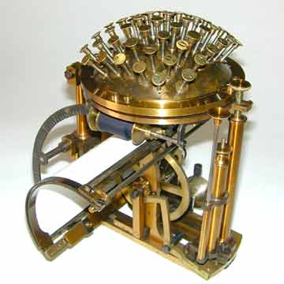

Эволюция печатных машинок
Клавиатуры и технологии для печати прошли очень длинный путь за последние пару столетий. Первые печатные устройства были придуманы и запатентованы в 1700-ых, тогда как первые изготовленные печатные машины были созданы в 1870-ых. Эти машины использовали технологию “слепой печати”, при которой символы печатались на перевёрнутых страницах и не были видны до завершения печати.
Первыми произведённые устройства для печати были в основном задуманы для использования слепыми людьми. Из важных стоит упомянуть печатную машину Пеллегрино Турри, произведённую в 1808 году, а также “типописатель” Вильяма Остина Бёрта, созданный в 1829, которые не получили особого внимания, но стали важным первым шагом для развития методов печати
Первое коммерчески успешное устройство для печати было создано Шоулзом, Глидденом и Соулом и выпущено под названием “Ремингтон 1”, которое с тех пор называют “первой печатной машинкой”. Однако, несмотря на коммерческий успех для своего времени, Шоулз и Глидден были разочарованы медленными продажами устройства и продали патент Денсмору и Йосту, которые начали выпускать устройство в Милуоки с некоторыми улучшениями, превратив устройство в стандарт для печатных машинок в 1910-ом до появления IBM Selectric в 1961 году.
IBM Selectric использовал для печати так называемые “печатные шары”, которые крутились, наклонялись и печатали буквы на странице. Такой механизм предотвращал замятие листов, которое часто происходило в печатных машинках с литерными рычагами, и значительно повышал возможную скорость печати
Печатные машинки прошли долгий путь и привели к эпохе компьютеров и самого часто используемого устройства ввода - компьютерной клавиатуры. Несмотря на то, что первые компьютеры и компьютерные клавиатуры были созданы раньше Selectric, эти мощные печатные машинки были настолько хороши для своей цели, что они продолжали быть популярными одновременно с клавиатурами даже во время роста популярности компьютеров. Известно, что некоторые писатели (например Давид Седарис) до сих пор используют и предпочитают Селектрики обычным методам печати. В остальном, печатные машины по большей части были заменены клавиатурами в роли самого используемого и предпочитаемого устройства ввода символов.
Компьютерные клавиатуры
В 70-ых годах компьютеры начали становиться более доступными для пользователей. Когда перфокарты перестали быть главным методом ввода данных в ЭВМ, люди пытались придумать новый метод ввода данных, и им стали первые электрические клавиатуры. Самые ранние клавиатуры собирались вручную и были очень тяжёлыми, так как они были полностью механическими и громоздкими. Так как они использовались инженерами и программистами, они создавались с фокусом на функционал, а не эстетику.
В конце 70-ых компании по типу Apple, Radio Shack и Commodore предвидели развитие раынка компьютерных клавиатур и начали производить их для собственных компьюетров, стандартизируя клавиатуру как метод ввода данных.
В 1981 году IBM выпустили свой первый персональный компьютер, который с 1986 поставлялся с клавиатурой Model M. Она приобрела невероятную популярность из-за того, что была очень легка в использовании. Model M была механической, имела очень высокое качество и тактильные ощущения, которые помогали людям приспособиться при переходе от печатных машинок к компьютерам. Единственной проблемой было то, что для многих пользователей клавиши "Shift" и "Enter" были слишком малы, для чего IBM придумали так называемые "keytop expanders", которые накладывались на клавиши с целью увеличения их площади
В 1990-ых, мембранные переключатели начали заменять механические, ведь они были тише, легче и дешевле в производстве. Однако они также были менее качественными, из-за чего со временем у энтузиастов появился интерес к использованию старых идей, позаимствованных у первых механических клавиатур